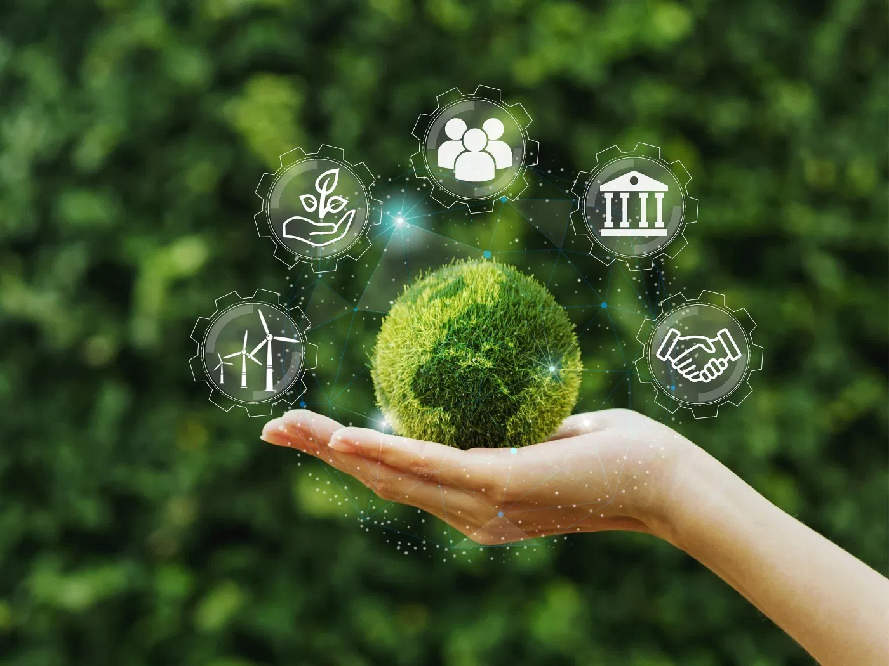
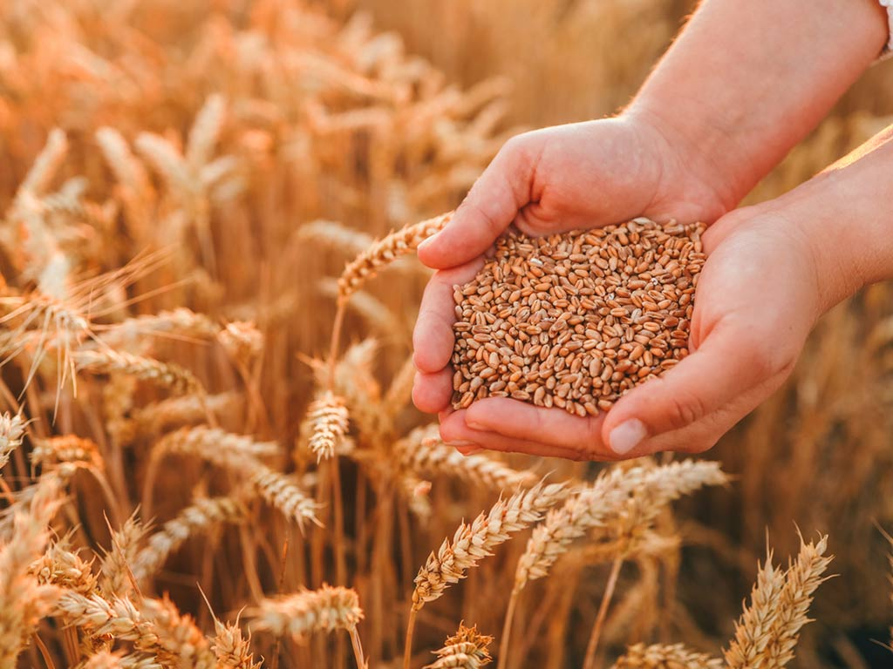
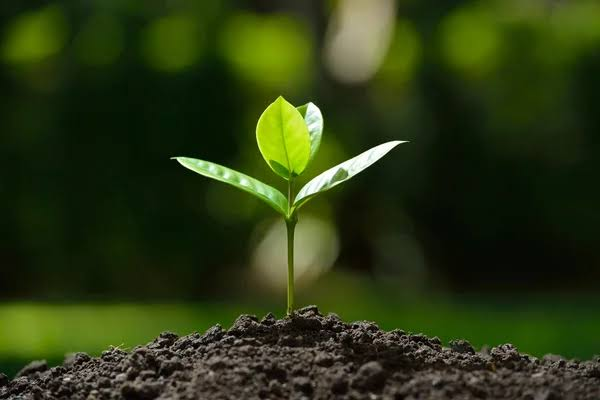

Os 4 Pilares da Sustentabilidade
Conhecendo as bases do agronegócio sustentável
Meio Ambiente
Preservação dos recursos naturais, conservação do solo e da água, e proteção da biodiversidade.
- Manejo sustentável do solo
- Preservação de nascentes
- Redução de agrotóxicos

Economia
Viabilidade econômica das propriedades rurais e geração de riqueza para o país.
- 25% do PIB brasileiro
- Geração de empregos
- Exportação de commodities

Social
Qualidade de vida no campo, inclusão social e valorização do trabalhador rural.
- 70% dos alimentos pela agricultura familiar
- Educação no campo
- Saúde rural

Tecnologia
Inovação, agricultura de precisão e digitalização do campo.
- Drones e sensores
- Agricultura 4.0
- Biotecnologia
